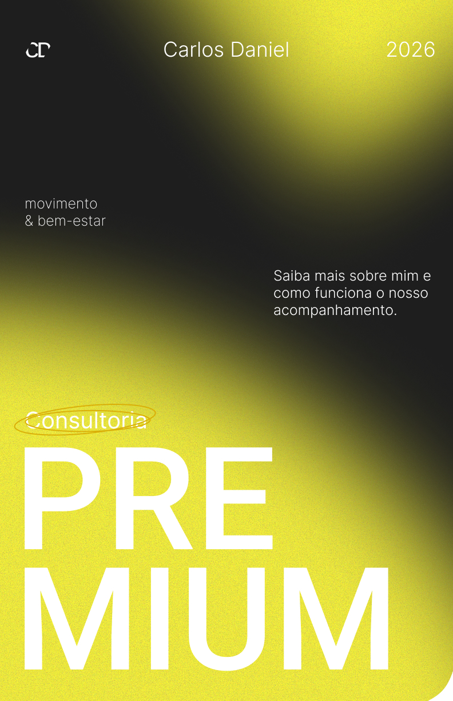

UI/UX Design
Acompanhamento Premium - Carlos Daniel
Design de interface para o Método FLOW, focado em organizar a transição entre o acompanhamento presencial e o digital. Estruturei a hierarquia de planos e valores para destacar benefícios como treinos personalizados e suporte contínuo, facilitando a escolha do usuário.
Ver no Figma